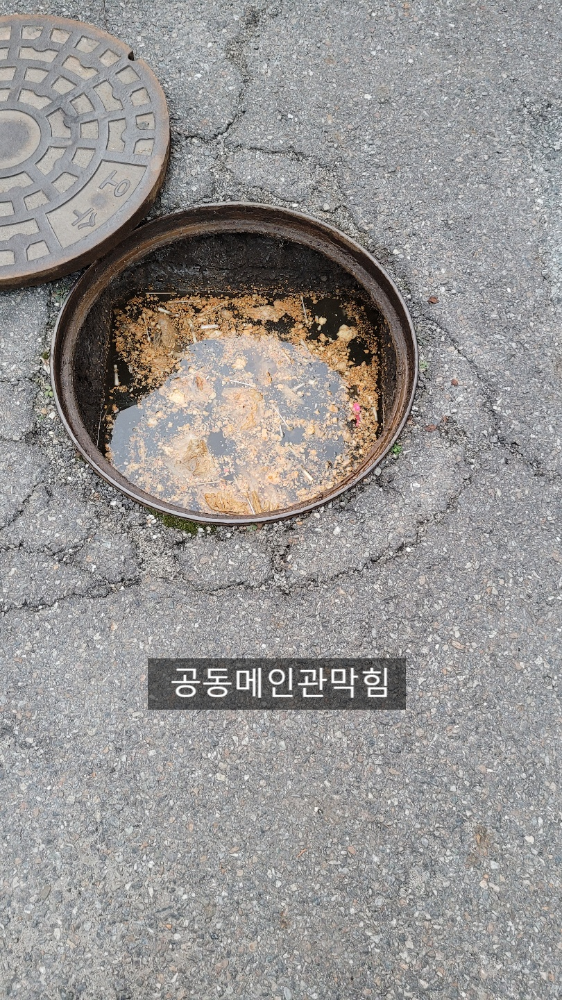
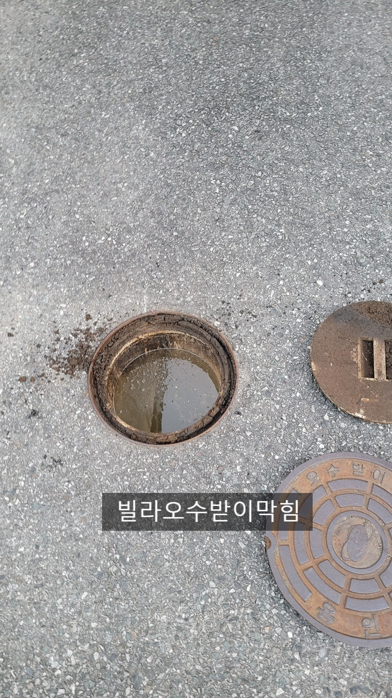
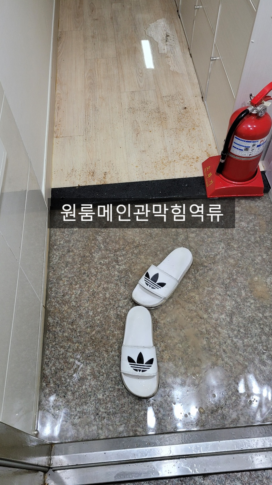
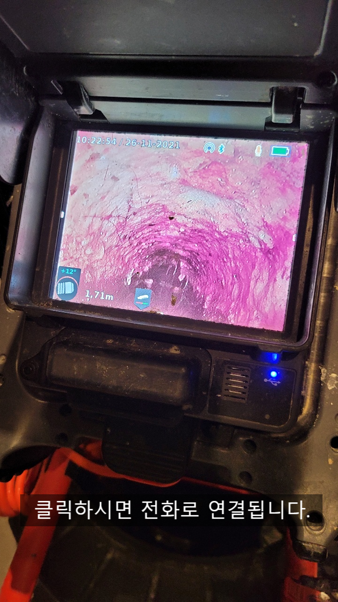
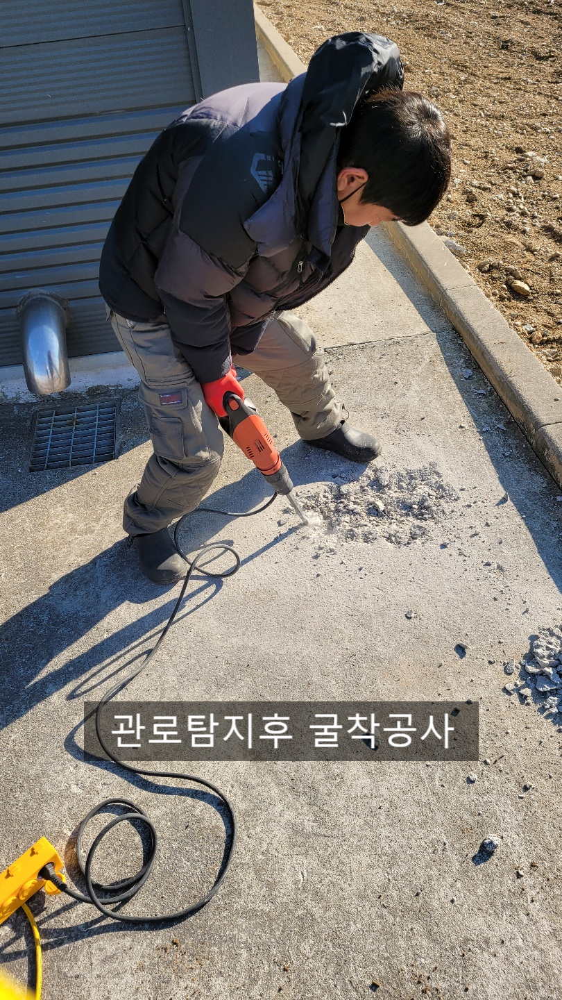
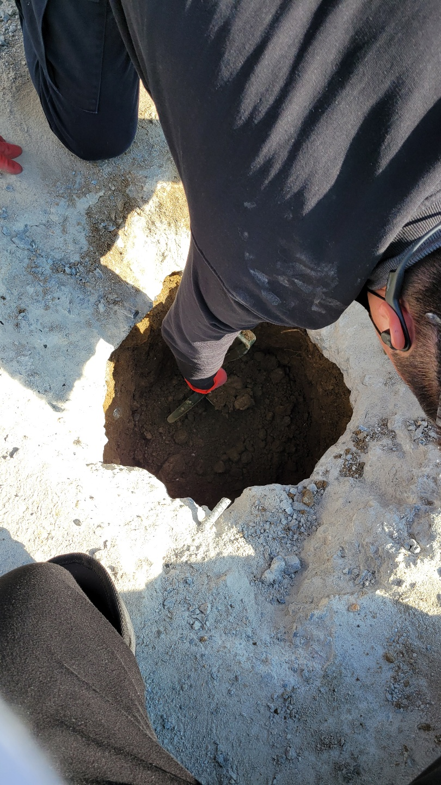

🏠 영통구하수구막힘 공동관막힘 해결
용인 하수구막힘 전문 시공 후기

📋 작업 개요
- 위치: 용인
- 서비스 유형: 하수구막힘, 배관막힘, 누수수리, 역류해결, 뚫는업체, 배관청소, 고압세척
- 작업 일시: 2021. 12. 8. 22:52
- 업체명: 하수구수사대 (010-5615-2118)
🔍 문제 상황
영통구하수구막힘 공동관막힘 해결
안녕하세요
"하수구수사대"입니다.
하수구배관이 막히게 되면 생활이 불편할 정도로
당황스러운데요 특히나 공동으로 사용하는 배관이
막힌다면 뜻하지 않게 피해를 보거니 패해를 주게 됩니다.
물을 위에서 낮은곳으로 흐르기때문에 제일 하단에 있는
공동관에 문제가 생긴다면 제일 낮은층으로 높은층에서
쓰는 물이 역류를 하게 되는 피해를 입게 되는데요
이러한 당황스러운 일을 피하려면 정기적인 점검과
배관청소를 실시하여야 합니다.
공동배관의 경우 원룸건물이나 단독주택은 건물주인이 아파트나 오피스텔은
관리실에서 주로 책임을 지고 관리를 하게됩니다.
하지만 배관의 경우 눈에 보이지도 않고 아직 일어나지도 않은

🔎 원인 분석
💡 전문가 진단: 하수구수사대010-2340-2118
문제이기 때문에 대부분 하수구배관에는 신경을 쓰지 않고 있는데요
이러다보니 본의 아니게 갑자기 피해를 입는 입주민이나 세입자가
종종 생기고 있습니다.
하수구에서 넘쳐나 방으로 흘러나오게되면 장판과 마루바닥
그리고 심한 악취와 누수가 생기게 되면 그 피해가 더 크다고 볼수 있습니다.
하수구막힘의 원인은 다양한데요
하수구의 원인은 보통 기름슬러지와 머리카락이 많고
오수관의 경우 물티슈또는 위생용품등이 주를 이루고 있습니다.
간혹 배관에 이물질이 들어가거나 배관이 무너지는 일도
나타나는데요 그 원인을 찾아내어 해결하는것 또한 실력이라고 할수 있습니다.
배관이 무너지거나 이물질 덩어리가 있다면 뚫을수가 없는데요
장비와 기술이 없다면 포기하고 가는 설비업체도 많습니다.
"하수구수사대"는 최첨단 장비로 장비가 진입이 안되면
왜 안되는지! 어떻게 해결할건지!에 대해서 포기하지 않고

🔧 작업 과정
끊임없이 도전하고 또 해결합니다^^
배관이 무너졌다면 어디에서 무너졌는지! 정확한 위치를
관로탐지장비로 찾고 배관을 찾아내서 원인파악과 확실한
해결을 해드립니다.
하수구수사대
010-2340-2118
배관을 뚫는 장비는 여러가지가 있는데요
기본적으로 스프링과 석션,플렉스샤프트,꽝청소기,고압세척 등등
다양한 장비가 있고 막힌 이물질이 무엇이냐에 따라
사용하는 장비가 다르답니다.
고객분들 입장에서는 막히는 일이 자주 일어나지 않아
어떤 장비를 사용해야 하는지 모를수 밖에 없는데요
이러한 이유로 고객에게 바가지를 씌우는 업체도 있으니
조심하셔야 합니다.
항상 하수구를 뚫고 나서는 내시경카메라로 확인을 해보시길
권해드리는데요 제대로 뚫렸는지! 이물질이 남아있지는 않은지!
확인을 하고 이물질이 남아있다면 추가로 작업을 해야 또다시 막히는
불편함을 예방할수 있습니다.
예전에 비해 아파트도 많아지고
고층오피스텔이나 원룸등 고층건물들이 많아지고
있어 공동관문제는 앞으로도 관리를 하지않으면
어느세대에서든지 문제가 생기게 되어있습니다.
전원주택처럼 단독주택의 경우에도 서구화된 식습관으로


✅ 작업 완료
인해 배관이 3년정도만 지나도 기름이 심하게 끼어 막히게 되는데요
마찬가지로 주택의 배관구조를 미리 파악하여 피해를
사전에 예방하여야 겠습니다^^
"하수구수사대"는 수도권 전지역에서 휴일없이
활동하고 있으니 하수구막힘으로 고민중이시라면
시원하게 해결해 드릴테니 언제든지 연락주세요




⚠️ 베란다 누수 및 방수 관리 방법
- ✅ 비가 많이 올 때 창틀 주변이나 아래층 천장에 얼룩이 생기는지 정기적으로 확인해 보세요.
- ✅ 우수관 주변 실리콘 마감이 들뜨거나 깨진 틈새가 있는지 손상 여부를 수시로 체크하세요.
- ✅ 베란다 바닥 타일의 줄눈(메지)이 소실되면 그 틈으로 물이 침투하여 누수가 유발됩니다.
- ✅ 누수 의심 증상 발견 시 방치하면 아래층 손실이 커지므로 즉시 전문가의 진단을 받으십시오.
💡 핵심 정리
- 확실한 장비 작업(내시경 점검 및 샤프트 스케일링)으로 원인을 뿌리 뽑습니다.
- 작업 후 1년 이내에 동일한 부위 재발 시 100% 무상 A/S 서비스를 보장합니다.
- 서울 · 경기 · 인천 전 지역에 24시간 언제든 긴급 출동할 수 있도록 항시 대기 중입니다.
❓ 자주 묻는 질문 (FAQ)
🚨 용인 하수구막힘 문제로 고민이신가요?
정확한 원인 진단과 확실한 시공으로 재발 없는 해결을 약속드립니다.
24시간 긴급 출동 | 서울 · 경기 · 인천 전지역 | 1년 내 재발 시 무상 A/S